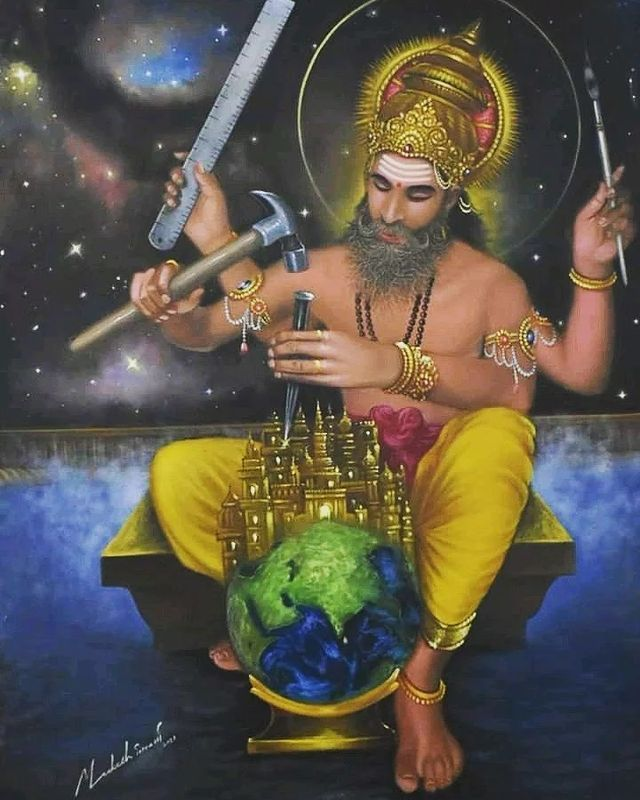
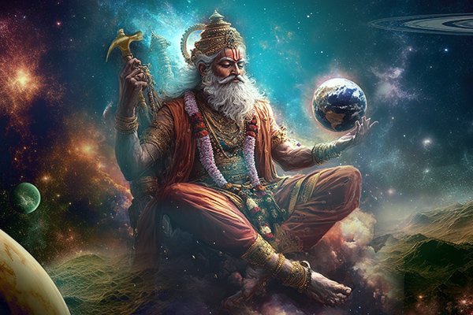
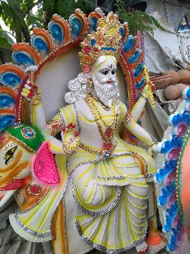

images

Vishwakarma Puja is a significant Hindu festival honoring Lord Vishwakarma, the divine architect of the universe.
Celebrated primarily by artisans, engineers, and craftsmen, it falls on the last day of the Bhadrapada month,
usually in September. On this auspicious day, devotees clean and adorn their tools and workplaces,
seeking blessings for skill, prosperity, and safety in their endeavors.
Rituals involve worshiping idols of Lord Vishwakarma with flowers, fruits, and sweets,
accompanied by prayers and chanting of mantras. The festival emphasizes the value of skilled labor in Hindu
culture, fostering a sense of community among workers. Ultimately, Vishwakarma Puja is a celebration of
creativity, dedication, and the divine connection between craftsmanship and spirituality.
images

Vishwakarma Puja is a vibrant celebration honoring Lord Vishwakarma, the divine architect and master
craftsman of the universe. Observed primarily by artisans, engineers, and workers, it falls on the last
day of Bhadrapada, usually in September. On this day, devotees clean and decorate their tools and workplaces,
seeking blessings for skill, safety, and prosperity.
Idols of Lord Vishwakarma are adorned with flowers and offerings of sweets, creating a festive atmosphere.
Rituals include chanting mantras and performing prayers, emphasizing gratitude for craftsmanship and creativity.
The festival not only acknowledges the importance of skilled labor but also fosters community spirit,
bringing people together to celebrate their trades. It’s a day of joy, camaraderie, and a little friendly
competition over whose prayers will be heard first. Ultimately, Vishwakarma Puja inspires individuals to
embrace their skills and work with dedication, celebrating the art of creation and innovation in everyday life.
images

Vishwakarma Puja is an important Hindu festival dedicated to Lord Vishwakarma, the divine architect and
craftsman of the cosmos. Celebrated by artisans, engineers, and workers, it takes place on the last day of
the Bhadrapada month, typically in September.
On this day, devotees engage in the ritual of cleaning and decorating their tools and workplaces,
symbolizing respect for their craft. Idols of Lord Vishwakarma are adorned with flowers, fruits, and sweets,
creating a festive and devotional atmosphere.
Rituals involve chanting mantras and performing prayers to seek blessings for safety, skill, and prosperity
in one’s work. Artisans express gratitude for their talents, asking for inspiration and guidance in their
future projects. Many workplaces host communal meals, fostering unity and camaraderie among workers.